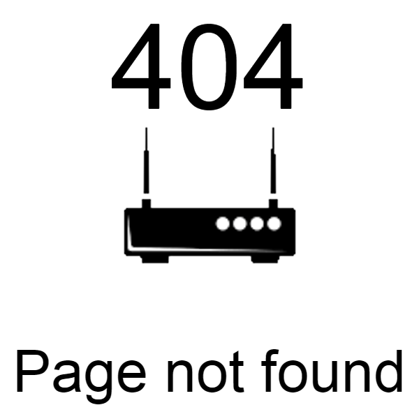
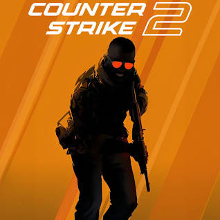
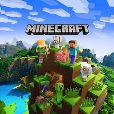

We all know that there are a lot of good video games out there but which one are the best to just sit and play in your free time?
WARNING
This may not include mobile and console games or games i don't know AND all of games are rated in my opinion.

Counter-Strike 2 (CS2) is a 2023 multiplayer tactical first-person shooter game developed and published by Valve. It is the fifth main installment of the Counter-Strike series. Developed as an updated version of the previous main entry, Counter-Strike: Global Offensive (2012), it was announced on March 22, 2023 and was released on September 27, 2023, replacing Global Offensive on Steam.
I personaly play it with friends or just when i am bored. The game is cool but there are toxic players out there so careful while playing it.
Don't Starve Together is the sequel to Don't Starve, and features the requested multiplayer mechanics. It was originally scheduled to come out in Summer 2014, though a specific date was not given. However, sign-ups for a limited-access, closed Beta were released. It came out on Mac and Linux after being finalized on Windows.
I personaly play it with friends or just when i am bored. The game is cool with so many unique recipes and bosses. I play it but usually not more than an hour. ALSO this game isn't free.

Minecraft is a sandbox game developed by Mojang Studios and originally released in 2009. The game was created by Markus "Notch" Persson in the Java programming language. Following several early private testing versions, it was first made public in May 2009 before being fully released in November 2011, with Notch stepping down and Jens "Jeb" Bergensten taking over development. Minecraft has become the best-selling video game in history, with over 300 million copies sold and nearly 140 million monthly active players as of 2023. It has been ported to several platforms.
I personaly play it with friends or just when i am bored. The game is cool but there are not a lot of bosses and their dev team(MOjang) is lazy to make updates which takes them A YEAR to add 1-5 mobs. But if you ignore that fact, the game is cool.